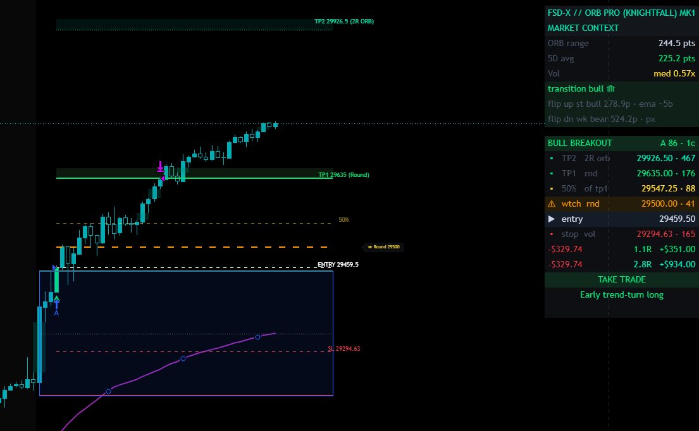
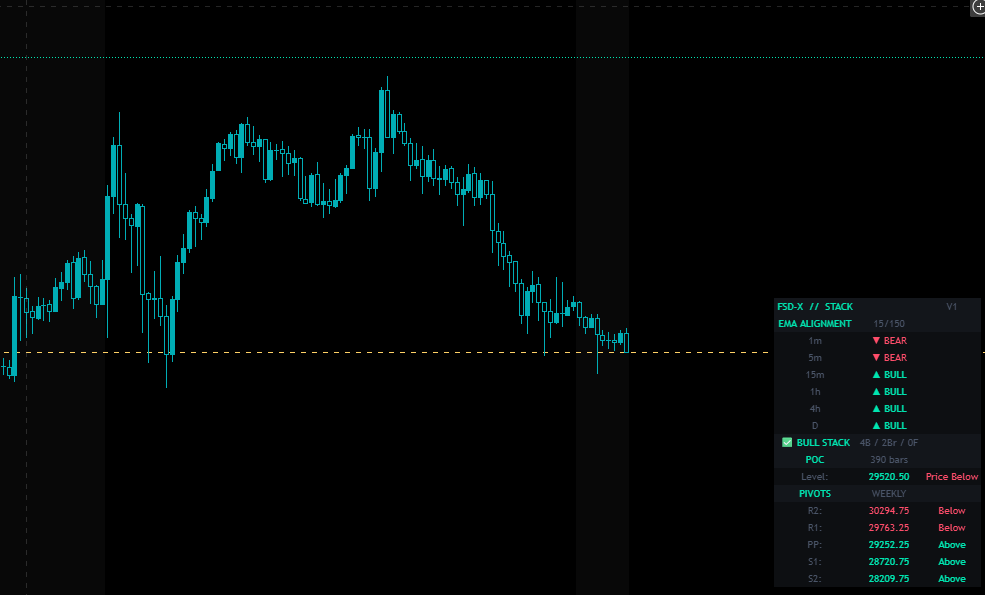
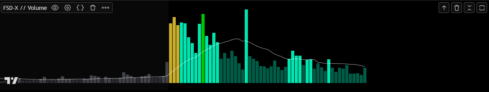

System Architecture Spec
A granular dive into our rules-based proprietary framework. Explore individual tool configurations bundled natively inside the unified VIP ecosystem membership.
FSD-X ORB PRO (Knightfall)
Operational Methodology
A comprehensive opening range breakout software engine. Calculates multi-timeframe trends, session volume spikes, and structural support/resistance lines to capture high-probability momentum breaks during liquid opening hours. Optimized specifically for NQ/MNQ on the 5-minute timeframe.
Evaluates entries using higher timeframe dual EMA crossover alignment, volume expansion averages, and optimal open range point balances (70-100 pts by default) to filter out low-quality chops.
Ditches static targets. Scans for real structural execution parameters like Previous Day High/Low, Weekly High/Low, lookback swing levels, and Fair Value Gaps (imbalance zones).
When no clear S/R confluences exist at a minimum R:R, the script intelligently deploys realistic math bounds utilizing 0.5x, 1x, or 2x the calculated ORB sizing.
Real-time on-screen dashboard displays granular data metrics: dollar-value performance by setup grade, total profit factors, best/worst winning streaks, and maximum tracking period drawdowns.
Includes a Quality-Only dashboard toggle allowing you to view exclusively A+, A, and B+ setup history. If lower-tier grades are showing negative historic metrics, you can quickly filter them out to preserve capital during erratic sessions.

The Knightfall edition unifies the indicator and backtester into one script — live signals, grading, and full backtesting from the same engine, so the chart and the backtest always agree. Access to this flagship cannot be acquired individually; it is bundled natively alongside our live trading rooms, companion filters, and live Discord channels.
FSD-X // Stack V1
Multi-Timeframe Confirmation Analytics
A multi-timeframe directional confirmation and bias alignment indicator map built to operate as a critical confirmation filter for FSD-X ORB Pro signals or as a standalone systemic intraday confluence map.
Evaluates EMA trends simultaneously across 1m, 5m, 15m, 30m, 1h, 4h, and Daily horizons to call automated BULL STACK or BEAR STACK triggers when 60%+ of intervals align perfectly.
Plots continuous institutional POC levels over customizable lookback bounds to confirm structural buyer control or identify overhead distribution blockades.
Generates automated math pivots (PP, R1, R2, S1, S2) derived from prior Daily, Weekly, or Monthly ranges to map absolute baseline resistance boundaries.
High-conviction entries are confirmed when price clears the open range breakout level while trading above the session POC and PP lines amidst a clean 6/7 or 7/7 Matrix Stack Score alignment. Scale down or skip completely during mixed stack conditions.

Includes fast/slow length inputs (20/50 system recommended), customizable transition zone percentages for precise flat/chop detection, and selective level visibility keys.
FSD-X // Volume Indicator
Ecosystem Integration
A specialized companion confirmation tool built natively to mirror the identical algorithmic detection logic of FSD-X ORB PRO. It automatically highlights the precise breakout execution candle bar within your volume pane to eliminate all discretionary matching guesswork.
System Color Key Architecture
Instantly spot if institution order blocks are backing the breakout structural transition or staying sidelined.
Track if fluid capital volumes sustain expansion all the way to target milestones or dry up prematurely.
Pinpoint exactly where severe liquidity imbalances flush throughout standard RTH execution sessions.

Designed exclusively to map right over the top of lower pane tracking monitors. Locks directly into precision sync modes whenever the main execution suite is active.
FSD-X Nexus 2.0
Ecosystem Utility
The all-in-one Chrome extension built specifically for prop firm futures traders. Nexus runs as a side panel directly inside TradingView — no tab switching, no extra windows. Everything you need to trade, journal, and analyze is in one place next to your chart.
// Included with VIP Access or available as a standalone subscription.
Full trade logging with calendar view, P&L tracking, win rate stats, grade filtering, tag system, CSV import/export, and multi-account support.
Automates Pine Script backtesting on TradingView. Scans strategy inputs, sets min/max/step ranges, runs all combinations hands-free, and exports ranked results to CSV.
Upload up to 3 chart timeframes and get an AI breakdown of structure, bias, key levels, and setup quality. Includes an optional risk calculator.
AI-powered news sentiment scan with Bullish/Bearish/Neutral verdict. Live economic calendar with High/Med/Low impact filters and timezone support.
Futures and Forex calculator with auto-detected $ per point for NQ, MNQ, ES, MES and major FX pairs. Enter your risk and stop — instantly outputs contracts and R:R.
Monte Carlo prop firm pass rate simulator. Supports Apex, TopStep, MFF, E8, or custom rules. Strategy Analyzer breaks down your edge by day, direction, and grade.
Paste raw options flow data and get an instant AI read on institutional positioning — direction bias, block size analysis, and price implications.
Dedicated journaling for manual backtesting sessions — separate from your live journal. Log by session, track P&L on a calendar, and export to CSV.

Acquire access straight from the official web store dashboard array. Completely standalone workspace assistant pipeline architecture.
Strategy Optimizer Pro
Data Engine Processing
Accelerate historical data collection. This Chrome automation extension handles the brute-force processing workload by programmatically cycling through variable Pine Script strategy inputs on TradingView in minutes instead of hours.
// Included with VIP Access or available as a standalone subscription.
Works smoothly over any custom backtesting metrics script code engine layouts.
Protected utilization parameters tied safely via hardware identification logic sequences.
Processes thousands of parameter iterations across structural data paths completely hands-free.
Automates script parsing metrics directly across runtime active trading browser frames instantly.
Everything above. One membership.
All 6 tools are included in every plan — Monthly, Annual, and Lifetime. Same suite, different payment structures.
View Membership Plans →